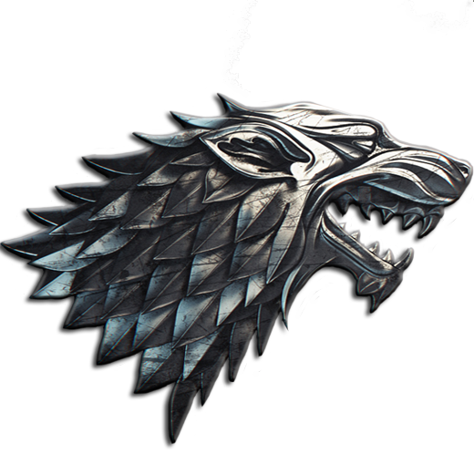

A song of nodes and edges: Network analysis in Game of Thrones
Data source: GitHub
To demonstrate the concept of network analysis, the chart on the right shows an interactive, force-directed graph of character relationships for George R.R Martin's Game of Thrones series using D3.js. The Network of Thrones article by Andrew Beveridge and Jie Shan inspired the work. The source data gathered from the novels can be found on Andrew Beveridge's GitHub.
The characters that feature in the novel are listed as the nodes in the network. A connection or 'edge' is counted when two character's names appear within 15 words of each other in each novel.
Click on the titles to show the characters from the novel
A Game of Thrones
A Clash of Kings
A Storm of Swords
A Feast for Crows
A Dance with Dragons
